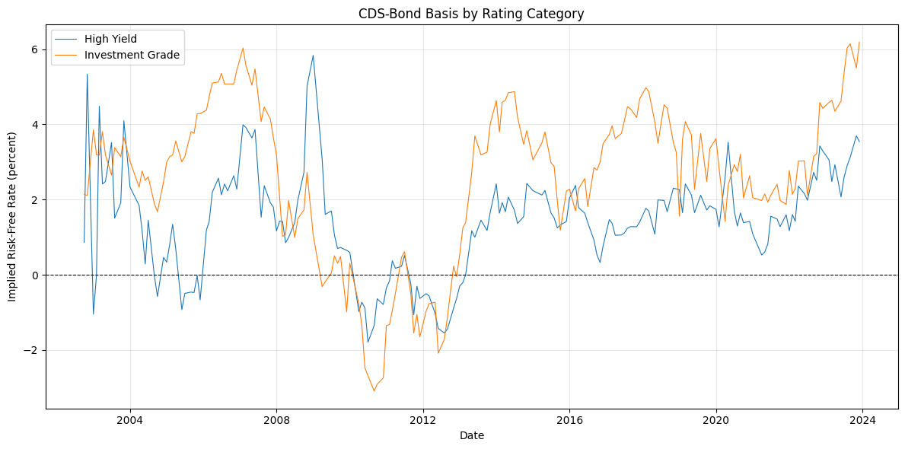
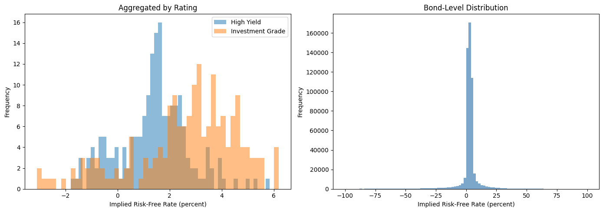

"""
# CDS-Bond Basis Summary
This notebook summarizes the CDS-Bond Basis dataset, which measures the implied
arbitrage return from the CDS and corporate bond markets as specified in
Siriwardane, Sunderam, and Wallen's "Segmented Arbitrage" paper.
## Methodology
The CDS basis (CB) is defined as:
$$
CB_{i, t, \\tau} = CDS_{i, t, \\tau} - FR_{i, t, \\tau}
$$
Where:
- $FR_{i, t, \\tau}$ = floating rate spread implied by a corporate bond (approximated by Z-spread/credit spread)
- $CDS_{i, t, \\tau}$ = CDS par spread (interpolated using cubic spline)
The implied risk-free rate is:
$$
rfr^{CDS}_{i, t, \\tau} = y_{t, \\tau} - CB_{i , t, \\tau}
$$
Where $y_{t, \\tau}$ is the duration-matched treasury yield.
"""
'\n# CDS-Bond Basis Summary\n\nThis notebook summarizes the CDS-Bond Basis dataset, which measures the implied\narbitrage return from the CDS and corporate bond markets as specified in\nSiriwardane, Sunderam, and Wallen\'s "Segmented Arbitrage" paper.\n\n## Methodology\n\nThe CDS basis (CB) is defined as:\n\n$$\nCB_{i, t, \\tau} = CDS_{i, t, \\tau} - FR_{i, t, \\tau}\n$$\n\nWhere:\n- $FR_{i, t, \\tau}$ = floating rate spread implied by a corporate bond (approximated by Z-spread/credit spread)\n- $CDS_{i, t, \\tau}$ = CDS par spread (interpolated using cubic spline)\n\nThe implied risk-free rate is:\n\n$$\nrfr^{CDS}_{i, t, \\tau} = y_{t, \\tau} - CB_{i , t, \\tau}\n$$\n\nWhere $y_{t, \\tau}$ is the duration-matched treasury yield.\n'
import sys
from pathlib import Path
sys.path.insert(1, "./src/")
import pandas as pd
import matplotlib.pyplot as plt
import seaborn as sns
import chartbook
BASE_DIR = chartbook.env.get_project_root()
DATA_DIR = BASE_DIR / "_data"
"""
## Load Data
"""
'\n## Load Data\n'
# Load FTSFR datasets
agg_df = pd.read_parquet(DATA_DIR / "ftsfr_cds_bond_basis_aggregated.parquet")
non_agg_df = pd.read_parquet(DATA_DIR / "ftsfr_cds_bond_basis_non_aggregated.parquet")
print("=== Aggregated Dataset ===")
print(f"Shape: {agg_df.shape}")
print(f"Date range: {agg_df['ds'].min()} to {agg_df['ds'].max()}")
print(f"Unique IDs: {agg_df['unique_id'].unique().tolist()}")
print("\n=== Non-Aggregated Dataset ===")
print(f"Shape: {non_agg_df.shape}")
print(f"Date range: {non_agg_df['ds'].min()} to {non_agg_df['ds'].max()}")
print(f"Unique CUSIPs: {non_agg_df['unique_id'].nunique()}")
=== Aggregated Dataset ===
Shape: (368, 3)
Date range: 2002-09-30 00:00:00 to 2023-11-30 00:00:00
Unique IDs: ['High Yield', 'Investment Grade']
=== Non-Aggregated Dataset ===
Shape: (532356, 3)
Date range: 2002-09-30 00:00:00 to 2023-11-30 00:00:00
Unique CUSIPs: 15147
"""
## Summary Statistics - Aggregated Data
"""
'\n## Summary Statistics - Aggregated Data\n'
# Pivot to wide format for statistics
agg_wide = agg_df.pivot(index="ds", columns="unique_id", values="y")
print("Aggregated CDS-Bond Basis (Implied Risk-Free Rate, percent)")
print(agg_wide.describe().T)
Aggregated CDS-Bond Basis (Implied Risk-Free Rate, percent)
count mean std min 25% 50% \
unique_id
High Yield 184.0 1.389239 1.356521 -1.795430 0.638136 1.451349
Investment Grade 184.0 2.585308 2.041065 -3.093328 1.720090 3.002103
75% max
unique_id
High Yield 2.166585 5.836944
Investment Grade 4.020769 6.191715
"""
## Summary Statistics - Non-Aggregated Data (Bond-Level)
"""
'\n## Summary Statistics - Non-Aggregated Data (Bond-Level)\n'
print("Non-Aggregated CDS-Bond Basis Statistics")
print(non_agg_df["y"].describe())
Non-Aggregated CDS-Bond Basis Statistics
count 532356.000000
mean 2.419959
std 10.309710
min -99.974593
25% 1.387730
50% 2.638555
75% 4.428929
max 99.862940
Name: y, dtype: float64
"""
## Time Series Plot - Aggregated by Rating
"""
'\n## Time Series Plot - Aggregated by Rating\n'
fig, ax = plt.subplots(figsize=(12, 6))
for uid in agg_df["unique_id"].unique():
subset = agg_df[agg_df["unique_id"] == uid].sort_values("ds")
ax.plot(subset["ds"], subset["y"], label=uid, linewidth=0.8)
ax.axhline(0, color="black", linewidth=0.8, linestyle="--")
ax.set_xlabel("Date")
ax.set_ylabel("Implied Risk-Free Rate (percent)")
ax.set_title("CDS-Bond Basis by Rating Category")
ax.legend(loc="best")
ax.grid(True, alpha=0.3)
plt.tight_layout()
plt.show()

"""
## Distribution of Implied Risk-Free Rates
"""
'\n## Distribution of Implied Risk-Free Rates\n'
fig, axes = plt.subplots(1, 2, figsize=(14, 5))
# Aggregated data
for uid in agg_df["unique_id"].unique():
subset = agg_df[agg_df["unique_id"] == uid]
axes[0].hist(subset["y"], bins=50, alpha=0.5, label=uid)
axes[0].set_xlabel("Implied Risk-Free Rate (percent)")
axes[0].set_ylabel("Frequency")
axes[0].set_title("Aggregated by Rating")
axes[0].legend()
# Non-aggregated data
axes[1].hist(non_agg_df["y"], bins=100, alpha=0.7, color="steelblue")
axes[1].set_xlabel("Implied Risk-Free Rate (percent)")
axes[1].set_ylabel("Frequency")
axes[1].set_title("Bond-Level Distribution")
plt.tight_layout()
plt.show()

"""
## Correlation Between Rating Categories
"""
'\n## Correlation Between Rating Categories\n'
if len(agg_wide.columns) > 1:
corr_matrix = agg_wide.corr()
print("Correlation Matrix:")
print(corr_matrix)
fig, ax = plt.subplots(figsize=(6, 5))
sns.heatmap(corr_matrix, annot=True, cmap="coolwarm", center=0, ax=ax)
ax.set_title("Correlation: Implied Risk-Free Rates by Rating")
plt.tight_layout()
plt.show()
Correlation Matrix:
unique_id High Yield Investment Grade
unique_id
High Yield 1.00000 0.61154
Investment Grade 0.61154 1.00000
"""
## Monthly Statistics Over Time
"""
'\n## Monthly Statistics Over Time\n'
# Create monthly summary
agg_df["ds"] = pd.to_datetime(agg_df["ds"])
agg_df["month"] = agg_df["ds"].dt.to_period("M")
monthly_stats = agg_df.groupby(["month", "unique_id"])["y"].agg(["mean", "std", "count"]).reset_index()
print("Monthly statistics by rating:")
print(monthly_stats.tail(20))
Monthly statistics by rating:
month unique_id mean std count
348 2022-11 High Yield 3.290949 NaN 1
349 2022-11 Investment Grade 4.427989 NaN 1
350 2023-01 High Yield 3.057994 NaN 1
351 2023-01 Investment Grade 4.584639 NaN 1
352 2023-02 High Yield 2.479028 NaN 1
353 2023-02 Investment Grade 4.640628 NaN 1
354 2023-03 High Yield 2.928783 NaN 1
355 2023-03 Investment Grade 4.350312 NaN 1
356 2023-05 High Yield 2.070046 NaN 1
357 2023-05 Investment Grade 4.624549 NaN 1
358 2023-06 High Yield 2.593905 NaN 1
359 2023-06 Investment Grade 5.366028 NaN 1
360 2023-07 High Yield 2.904122 NaN 1
361 2023-07 Investment Grade 6.035084 NaN 1
362 2023-08 High Yield 3.133236 NaN 1
363 2023-08 Investment Grade 6.144073 NaN 1
364 2023-10 High Yield 3.696961 NaN 1
365 2023-10 Investment Grade 5.502792 NaN 1
366 2023-11 High Yield 3.544170 NaN 1
367 2023-11 Investment Grade 6.191715 NaN 1
"""
## Data Quality Check
"""
'\n## Data Quality Check\n'
print("=== Aggregated Dataset ===")
print(f"Missing values: {agg_df['y'].isna().sum()}")
print(f"Infinite values: {(~agg_df['y'].apply(lambda x: -1e10 < x < 1e10)).sum()}")
print("\n=== Non-Aggregated Dataset ===")
print(f"Missing values: {non_agg_df['y'].isna().sum()}")
print(f"Infinite values: {(~non_agg_df['y'].apply(lambda x: -1e10 < x < 1e10)).sum()}")
=== Aggregated Dataset ===
Missing values: 0
Infinite values: 0
=== Non-Aggregated Dataset ===
Missing values: 0
Infinite values: 0